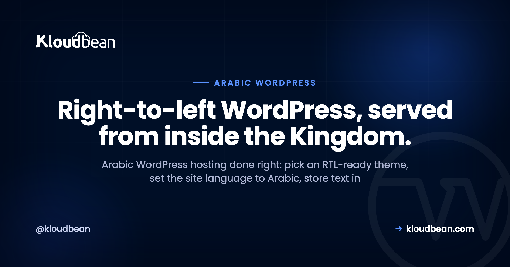

Arabic WordPress Hosting Done Right: RTL, Fonts, and utf8mb4

You built an Arabic WordPress site, opened the homepage, and the text came back as ????? or a wall of أخ-shaped garbage. Or the layout runs left-to-right when it should mirror, or it loads fine in your office and crawls for a reader in Riyadh. Arabic WordPress hosting has a short list of specific gotchas that generic guides skip, and most are fixable in an afternoon once you know where to look. This is a field guide to running an Arabic, right-to-left WordPress site for a Saudi or Gulf audience: the theme and language settings, the database charset that decides whether Arabic survives, fonts, caching, and hosting close to your readers.
Five things. An RTL-ready theme with the site language set to Arabic (WordPress handles right-to-left natively). A database on the utf8mb4 charset so Arabic and emoji store correctly instead of turning into question marks. A subset, cached Arabic webfont. Hosting near your readers, which for a Saudi audience means the in-Kingdom Google Cloud Dammam region. And a managed stack for caching, backups, free SSL, and staging.
Does WordPress support Arabic and RTL out of the box?
Yes, and it's easier than people expect. Go to Settings, then General, and set Site Language to العربية. WordPress pulls the Arabic translation, flips the admin to right-to-left, and serves your site in RTL. No plugin needed for the language itself.
Right-to-left is really two concerns. One is content direction, which WordPress handles: once the locale is Arabic, is_rtl() returns true, the <body> gets an rtl class, and WordPress loads the right-to-left stylesheets. The other is your theme. An RTL-ready theme mirrors cleanly, with the logo on the right, the menu flowing right-to-left, and text aligned right. A theme that hard-codes float: left everywhere looks broken in Arabic, however good your hosting is.
So the practical rule for Arabic website hosting is simple. Pick a theme that lists RTL support (most ship an rtl.css), set the site language to Arabic, and check the front end. Hosting doesn't draw your layout; your theme and WordPress do. It decides whether the text stores correctly, how fast it reaches readers, and whether you recover when something breaks.
The bug that turns Arabic into question marks: your database charset
Here's the failure I'd bet on before I've seen your site. You save an Arabic post, reload, and the words are replaced by ????? or mojibake like العربية. The layout's fine; the text is wrecked. This is almost never a WordPress bug. It's a character-set mismatch in the database, the most common thing that breaks Arabic sites.
Text passes through several layers, each with its own charset: the database, the table, the column, the PHP-to-MySQL connection, and the DB_CHARSET line in wp-config.php. If any link treats UTF-8 as Latin-1, Arabic gets mangled. The fix is to make the whole path speak one charset: utf8mb4.
One detail causes half the trouble here. In MySQL, the charset historically labelled utf8 is actually utf8mb3, which stores at most three bytes per character and can't hold four-byte characters like emoji. Real, full UTF-8 in MySQL is utf8mb4. WordPress core has defaulted to it since version 4.2 (back in 2015) when the database supports it. Set it explicitly:
// wp-config.php
define( 'DB_CHARSET', 'utf8mb4' );
define( 'DB_COLLATE', '' ); // let the DB pick utf8mb4_unicode_ciNot sure what your database runs? Check directly, in MySQL or via WP-CLI with wp db query:
SHOW VARIABLES LIKE 'character_set_database';
-- you want the value: utf8mb4
ALTER TABLE wp_posts
CONVERT TO CHARACTER SET utf8mb4
COLLATE utf8mb4_unicode_ci;Match the symptom to the cause with this field table.
| Symptom | Likely cause | Fix |
|---|---|---|
Arabic shows as ????? | Column or connection is Latin-1, so the UTF-8 bytes get dropped on the way in | Convert tables to utf8mb4; set DB_CHARSET to utf8mb4 |
Arabic shows as الع mojibake | Text saved through a mismatched connection charset and got double-encoded | Re-export and re-import with the correct charset; fix the connection charset first |
| Emoji or rare characters vanish | Tables are on old utf8 (three-byte utf8mb3), not utf8mb4 | Move the affected tables to utf8mb4 |
| An imported store broke on migration | mysqldump ran without a charset flag, so the dump lied about its encoding | Re-dump with --default-character-set=utf8mb4, reimport, verify on staging |
mysqldump that ran without --default-character-set=utf8mb4, which double-encodes the text. Do the conversion on a staging copy first, never on the live database, because a botched conversion is far harder to undo than to prevent.On Kloudbean this is mostly a non-event, by design. The managed MySQL and MariaDB engines default to utf8mb4, so a fresh Arabic WordPress site stores its first post cleanly. You still own migrating old data correctly, but you start from a database that already speaks Arabic. For how a managed database attaches to a WordPress app, the managed WordPress hosting guide walks the whole stack.

Fonts: making Arabic script look the way it should
Arabic is cursive and connected, so type choices matter more than they do in Latin text. Lean on the browser default and your site renders in whatever Arabic font each device ships, which rarely matches your brand. A dedicated Arabic webfont fixes that. Good open options include Cairo, Tajawal, IBM Plex Sans Arabic, and Noto Naskh Arabic, which all cover the script well.
There's a cost people forget. Arabic glyph sets are large, so a webfont file can be heavy, and a fat font undoes the speed you came here for. Three habits keep it fast: subset the font to the Arabic range plus the Latin you use, self-host or load only that subset, and set font-display: swap so text shows immediately while the font loads. Done right, an Arabic page is as quick as an English one. The broader playbook is in speed up WordPress.
Arabic WordPress hosting in Saudi Arabia: why host in-Kingdom?
Two reasons, and they stack. First, speed. Distance is physics, not a setting you can tune away. Riyadh to a European data center is roughly 4,000 km, a floor of tens of milliseconds on every round trip, often 90 to 130 ms in practice. Serve the same reader from Dammam and that floor mostly disappears into the single digits or low tens. Arabic content isn't heavier than English, but a font-rich page firing a dozen requests feels every millisecond. In-Kingdom hosting is the most direct speed win for a Saudi audience.
Second, residency. If you hold personal data on people in Saudi Arabia, keeping it in-Kingdom is often expected or required, and it comes up constantly in procurement. Saudi Arabia's PDPL is real, and the honest framing is shared responsibility: hosting in the Kingdom settles the location part, while consent, retention, and disclosures stay yours. No host makes you "certified" on its own. The full buyer's guide is cloud hosting in Saudi Arabia.
On Kloudbean, the practical move is one choice at launch. Among its seven clouds, the in-Kingdom option is Google Cloud's Dammam region, code-named me-central2, which sits physically inside Saudi Arabia. It isn't the only Saudi region on the market, and Kloudbean doesn't own a data center there; the capability comes from provisioning on that Google Cloud region. Pick it when you add the server, and your WordPress site, its managed database, and its backups all live on Saudi soil.

Does caching work on right-to-left and multilingual sites?
Yes, and the nervousness here is usually misplaced. A full-page cache serves a ready-made copy of the HTML, and right-to-left is baked into that HTML, so the cache doesn't care which direction the text runs. A single-language Arabic site caches exactly like an English one.
The real trap is multilingual. If you run Arabic alongside English with Polylang or WPML, the cache key has to include the language, or you'll serve a cached Arabic page to an English visitor. Most setups give each language its own URL (like /ar/ and /en/), which caches cleanly. The danger is switching language by cookie on the same URL, where a naive cache hands the wrong version to the wrong reader. Keep languages on separate URLs and the problem evaporates.
An object cache helps every language equally. A managed Redis stores the results of the queries WordPress repeats endlessly, so a busy Arabic site isn't asking MySQL the same thing a thousand times a minute. Page cache for the HTML, object cache for the queries, separate URLs per language: quick sites, no RTL-specific hacks.
The managed stack: SSL, backups, and staging you'll actually use
A managed host handles the boring, critical jobs, and three matter a lot for an Arabic site. Free SSL is issued and auto-renews, so HTTPS is one step. Automatic backups run off the box and restore themselves, exactly what you want the day a charset conversion or theme swap goes sideways. And one-click staging gives you a copy of the live site to break safely.
Staging is the habit that saves Arabic sites specifically. Test an RTL theme change, a utf8mb4 conversion, or a translation plugin on a staging copy, and you find the broken layout or the mangled text before your readers do. Push to live only once it looks right. Kloudbean gives you one-click staging for WordPress (and Laravel), automatic backups with self-serve restore, and a baseline every server gets: a firewall and brute-force banning. The security half you own is in secure WordPress hosting.


A quick honest take, and where to go next
After a fair number of these builds, my read is that Arabic WordPress rarely fails for exotic reasons. It fails on two boring things: the text isn't in utf8mb4, or the site sits a continent away from its readers. Fix those two, pick an RTL-ready theme, add a subset Arabic font, and you've handled most of what separates a native-feeling site from a bolted-together one.
Running an Arabic store? The same rules apply with more at stake, since checkout latency and customer-data residency turn into money. That's covered in hosting for Saudi ecommerce. Weighing managed WordPress hosts for an Arabic project? The honest head-to-head is Kloudbean vs Kinsta. Both keep the focus where it belongs: storing Arabic cleanly and serving it fast to the Gulf.
Arabic that renders right, served from inside the Kingdom.
Launch managed WordPress on Google Cloud's Dammam region (me-central2), on a database that speaks utf8mb4 from the first post, with staging, backups, and free SSL handled. Plans start from $8/mo, Enterprise is custom. Start at kloudbean.com, see options on pricing.
In-Kingdom Dammam region · utf8mb4 managed databases · One-click staging · Automatic backups · Free auto-renewing SSL · Free migration assistance · Free trial
FAQ
Does WordPress support Arabic and right-to-left out of the box?
Yes. Set Site Language to Arabic under Settings, then General, and WordPress loads the Arabic translation, flips the admin to right-to-left, and serves the front end in RTL. You supply an RTL-ready theme, whose stylesheet is what mirrors the layout.
Why is my Arabic WordPress text showing as question marks?
That's a database charset mismatch, not a WordPress bug. Somewhere in the chain (table, column, connection, or wp-config) UTF-8 is read as Latin-1, so Arabic renders as junk. Use utf8mb4 everywhere and convert the affected tables, testing on staging first.
What database charset should an Arabic WordPress site use?
Use utf8mb4. MySQL's older utf8 is really utf8mb3, storing only three bytes per character, so it can't hold emoji or some symbols. utf8mb4 is full UTF-8. WordPress has defaulted to it since version 4.2, and Kloudbean's managed MySQL and MariaDB use it by default.
Do I need a special theme for an Arabic WordPress site?
You need an RTL-ready theme, one that ships right-to-left styles (usually an rtl.css). Most modern themes do. WordPress applies the RTL stylesheet automatically once the language is Arabic. A theme that hard-codes left-side spacing will look broken in Arabic.
What are good fonts for an Arabic WordPress site?
Cairo, Tajawal, IBM Plex Sans Arabic, and Noto Naskh Arabic all cover the script well. Subset your choice to the Arabic range, self-host or load only that subset, and set font-display to swap. Arabic glyph sets are large, so an unsubsetted webfont slows the page.
Should I host my Arabic WordPress site in Saudi Arabia?
If your readers are in the Kingdom, yes, mostly for speed. Hosting in Europe adds roughly 90 to 130 ms per round trip from Riyadh, which the Dammam region removes for local readers. It also helps with residency, which stays a shared responsibility you own at the app level.
Can I run a bilingual Arabic and English WordPress site?
Yes, with Polylang or WPML. Give each language its own URL, like /ar/ and /en/, so caching stays clean and each version serves correctly. WordPress applies RTL to the Arabic side and LTR to the English side automatically. Avoid switching language by cookie on the same URL.
Does caching work on RTL WordPress sites?
Yes. A page cache stores the finished HTML, and right-to-left is already baked into it, so direction makes no difference. A single-language Arabic site caches like any other. For multilingual sites, keep each language on its own URL and add a Redis object cache.
How much does Arabic WordPress hosting cost?
On Kloudbean, standard plans start from $8 a month, and Enterprise is custom pricing based on scale. An Arabic site follows the same plans as any WordPress site; the language doesn't change the price. Confirm current numbers on the pricing page before you commit.
Can you migrate my existing Arabic WordPress site without breaking the text?
Yes, and the charset is the thing to watch. Export the database with utf8mb4 so the text isn't double-encoded, import onto the new host, and verify the Arabic on staging before switching DNS. Free migration assistance can handle it, so a mojibake site never goes live.